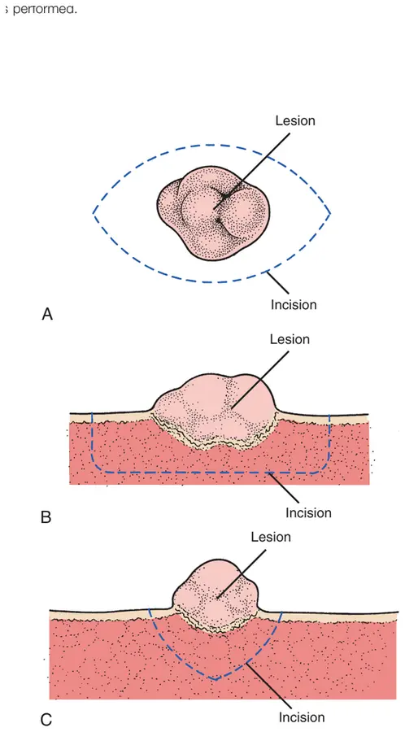

نسخه استخراجشده؛ ترجمه یا تأیید علمی انجام نشده است. وضعیت: captured
تعریف: واژهی بیوپسی به معنای برداشتن بافت از بدن زنده برای معاینهی تشخیصی میکروسکوپی است.

و جایگاهش: بیوپسی دقیقترین و صحیحترین همهی اعمال تشخیصی بافتی است، و هرگاه تشخیص قطعی با اعمال کمتهاجمیتر به دست نیاید باید انجام شود. هدف اصلیاش این است که تشخیص را دقیقاً تعیین کند تا درمان درست ارائه شود — چون بسیاری از ضایعات متفاوت، ظاهر بالینی یا رادیوگرافیک مشابهی دارند.
و اینجا یک نکتهی ظریف و آرامشبخش: در واقعیت، بیوپسی بیشتر احتمال دارد بدخیمی را رد کند تا اینکه سرطان را تشخیص دهد — چون اکثریت ضایعات دهانی و ادنتوژنیک خوشخیماند.
ولی خودِ واژه دردسر دارد: واژهی بیوپسی بسیاری از بیماران را به این برداشت میرساند که دندانپزشک به بدخیمی مشکوک است — پس گفتوگوهایی که این واژه در آنها میآید باید با دقت عبارتبندی شوند تا نگرانی یا اضطراب بیمورد ایجاد نکنند.
اندیکاسیونهای بیوپسی:
چهار نوع اصلی بیوپسی در دهان و اطرافش: سیتولوژیک، برشی (incisional)، برداشتی (excisional)، و آسپیراسیون.
بیوپسی برشی — تنها بخش کوچکی از ضایعه را برمیدارد. نمونهگیری برشی وقتی به کار میرود که:
و اگر ضایعه بزرگ باشد یا در نقاط مختلف ویژگیهای متفاوتی نشان دهد، ممکن است بیش از یک ناحیه نیاز به نمونهگیری داشته باشد. نمونه معمولاً بهصورت یک گُوِه (wedge) از بافت برداشته میشود، بهگونهای که هم بافت با ظاهر طبیعی و هم بافت غیرطبیعی را دربر بگیرد.
بیوپسی برداشتی — برداشتن ضایعه در تمامیتش، بههمراه حاشیهای ۲ تا ۳ میلیمتری از بافت طبیعی اطراف.
و یک الزام: ضایعاتی که میتوان آنها را بهطور کامل و بدون به خطر انداختن بیشازحد ظاهر یا عملکرد دهانی بیمار برداشت، باید برداشته شوند تا تهدید بر سلامت بیمار از بین برود.
بیوپسی آسپیراسیون — با سوزن و سرنگ، با نفوذ به ضایعهی مشکوک و کشیدن محتویاتش. دو نوع اصلی دارد: (۱) بیوپسی برای بررسی اینکه آیا ضایعه مایع دارد، و (۲) بیوپسی برای کشیدن سلول جهت تشخیص پاتولوژیک که به آن آسپیراسیون با سوزن ظریف (FNA) میگویند و اغلب توسط پاتولوژیستهای آموزشدیده انجام میشود.
و دو نکتهی عملی آسپیراسیون: آسپیراسیون روی هر ضایعهی پُر از مایع انجام میشود، بهجز موکوسل؛ و سوزن ۱۶ تا ۱۸ گیج متصل به سرنگ آسپیراتور به کار میرود. FNA بهویژه برای تودههای گردن که نمونهگیری جراحیشان دشوار است، ابزار تشخیصی بسیار مؤثری است.